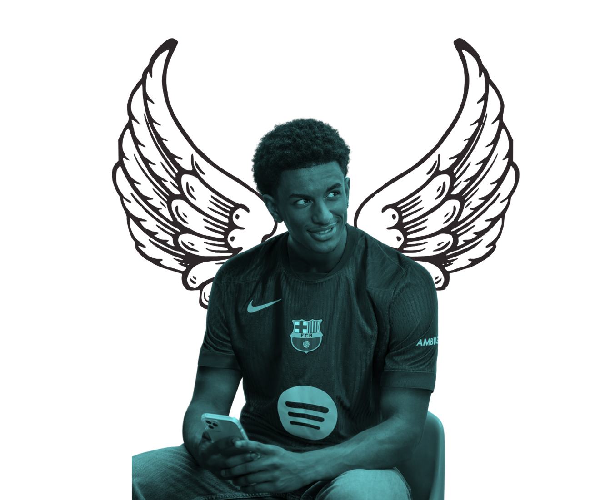

Na Athlete-Tech, somos apaixonados por esporte, tecnologia e performance. Criamos o Capture Win com o objetivo de transformar a forma como atletas registram, acompanham e evoluem nos seus treinos. Sabemos que cada conquista importa — por isso, queremos dar as ferramentas para que cada movimento seja capturado e cada vitória, celebrada.

Nossa Missão é...
Transformar o modo como atletas se desenvolvem. Com o Capture Win, queremos unir tecnologia e desempenho esportivo, oferecendo ferramentas rápidas, inteligentes e motivadoras que ajudem cada atleta a alcançar seu melhor. Acreditamos que todo progresso merece ser capturado, analisado e celebrado — e estamos aqui pra tornar isso possível, de forma inovadora e inteligente.